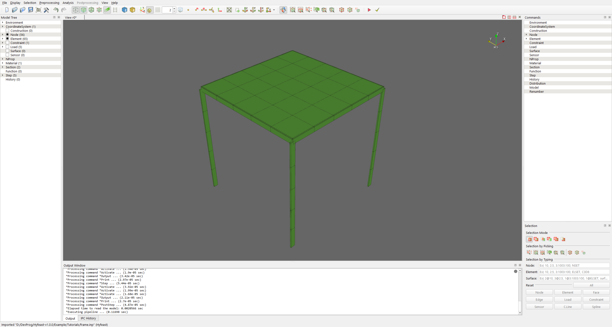
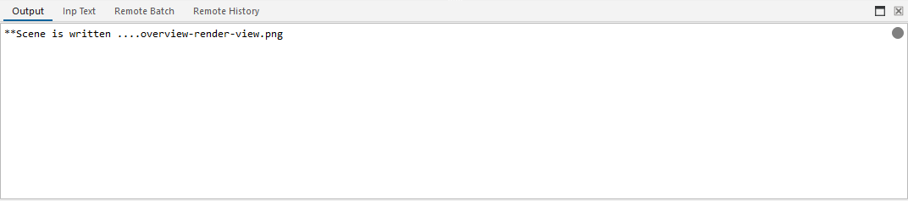
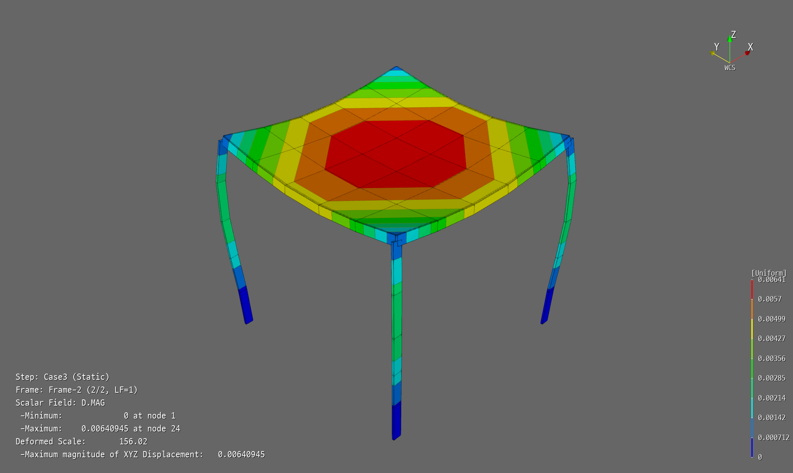

1 시작하기
이 튜토리얼은 준비된 예제 모델 하나로 Hyfeast의 기본 작업 흐름을 처음부터 끝까지 실행해 본다. 모델을 불러오고, 화면을 조작하고, 해석을 실행하고, 결과를 화면에서 확인한다. 모델을 직접 만드는 방법은 다음 튜토리얼에서 다룬다.
예제는 Example/Tutorials/frame.inp다. 기둥과 보는 beam 요소, 지붕은 shell 요소로 이루어진 작은 3차원 골조이며, 해석 step 네 개가 정의되어 있다.
| Step | 내용 |
|---|---|
Case1 |
수평 점하중 |
Case2 |
수평 등분포하중 |
Case3 |
지붕 자중 |
FrqStep |
고유진동수 해석 |
1.1 모델 불러오기
File > Import from File 을 누르고, 파일 형식 Hyfeast(*.inp)로 Example/Tutorials/frame.inp를 연다.
모델이 Render View에 나타나면 전처리 모드로 들어온 것이다.

1.2 화면 조작
Render View 안에서는 마우스로 시점을 조작한다.
- 왼쪽 버튼 드래그: 회전
- 휠: 확대·축소
- 가운데 버튼 드래그: 이동
자주 쓰는 시점과 표시 방법은 Display 메뉴에 있다.
- Display > View Direction > Iso Z — 기본 등각 시점
- Display > View Direction > View Reset — 모델 전체를 화면에 맞춤
- Display > Representation > Surface — 면으로 표시
- Display > Display Control > Grid — 바닥 격자 켜기/끄기
1.3 해석 실행
해석은 모델이 파일로 저장되어 있어야 실행된다.
- File > Save As 로 작업 폴더에 저장한다 (예:
tmp/frame.hdb). - Analysis > Analysis 를 누른다.
진행 상황과 오류 메시지는 Output Window 에 표시된다. 해석이 끝나면 화면이 자동으로 후처리 모드로 바뀐다.

1.4 결과 확인
후처리 모드에서는 Postprocessing 메뉴와 툴바를 쓴다. 결과 화면은 두 단계로 만든다. 먼저 보고 싶은 결과 위치(step과 frame)를 고르고, 그다음 표시 방법을 정한다.
- Step 콤보박스에서
Case3를 고른다. - Postprocessing > Plot > Contour 를 켠다.
- Scalar field에서 변위 크기
D.MAG를 고른다. - Postprocessing > Plot > Deformed 를 켠다. 변형 형상 위에 contour가 겹쳐진다.
- Scalar bar를 켜서 색과 값의 대응을 확인한다.

지붕 가운데가 아래로 처진 형상이 보이고, 화면의 결과 정보에 Maximum 값이 약 0.0064로 표시되면 올바르게 수행한 것이다.
1.5 명령줄로 해석하고 결과만 열기
hfStudio 안에서 해석하는 대신, 명령줄에서 hfAnalyzer로 해석을 먼저 수행하고 hfStudio로는 결과만 열 수도 있다. 저장소 루트에서 실행한다.
hfAnalyzer .\Example\Tutorials\frame.inp
입력 파일과 같은 폴더에 결과 파일 frame.hdb가 만들어진다. 이 파일을 File > Open 으로 열면 바로 후처리 모드로 들어가며, 결과 확인 방법은 1.4절과 같다.
해석과 후처리를 분리하면 해석이 오래 걸리는 모델이나 여러 모델을 한꺼번에 처리할 때 편리하다. 이 방식은 4 자동화에서 다시 쓴다.
다음 튜토리얼 2 보 외팔보에서는 작은 모델의 입력 파일을 직접 읽으면서 해석하고, 결과를 수계산과 비교한다.